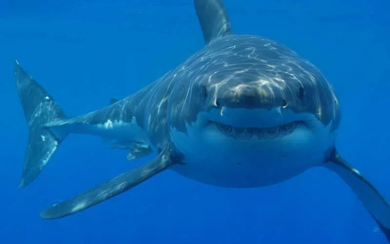
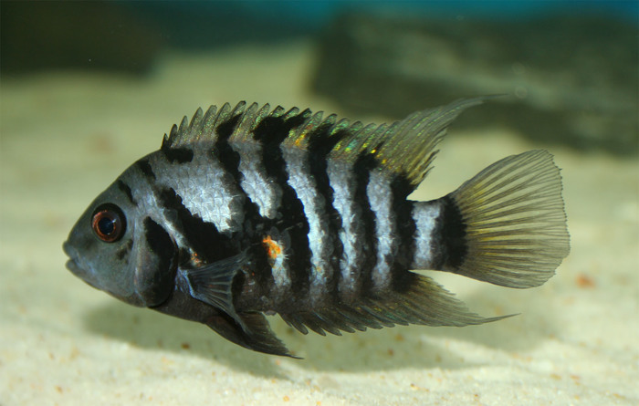

საინტერესო თევზები
კლოუნი თევზი

კლოუნ თევზი (Amphiprioninae) ცხოვრობს მარჯნის რიფებზე, განსაკუთრებით ზღვის ანემონებთან. იგი პატარა ზომისაა (4–15 სმ), ნარინჯისფერი სხეული აქვს თეთრი ზოლებით. კვებავს პლანკტონით და წყალმცენარეებით. ცნობილია ფილმიდან "Finding Nemo". სიმბიოზშია ანემონთან, რომელიც იცავს მას მტაცებლებისგან.
ზვიგენი
ზვიგენები — ხრტილიანი თევზები ზვიგენისნაირთა რიგისა. არსებობს 3 ქვერიგი: ნამდვილი ზვიგენები, უძველესი ზვიგენები და რქოვანი ზვიგენები. აქვთ თითისტარისებრი სხეული, ხუთ-ხუთი სალაყუჩე ხვრელი (ექვს-ექვსი — მხოლოდ ტროპიკულ ცხვირხერხას და ზოგ პრიმიტიულ ზვიგენებს), ორი ზურგის ფარფლი. კუდქვეშა ფარფლი არ აქვს მხოლოდ ქიცვიან ზვიგენებს ანუ კატრანს, პოლარულ ზვიგენებს, ცხვირხერხას და ზღვის ანგელოზს. ზვიგენების სხეული დაფარულია პლაკოიდური ქერცლით. პირი დიდია, თავის ქვემო ნაწილში მოქცეული.
ზოლებიანი თევზი (Zebrafish)
ზოლებით თევზი (Danio rerio) არის პატარა ზომის (2–4 სმ) ტბის და მდინარის თევზი. ცნობილია სამეცნიერო კვლევებში, რადგან მისი სხეულის გამჭვირვალობა და გენეტიკა შესანიშნავია ექსპერიმენტებისთვის. ცხოვრობს ტბებსა და მტკნარ წყლებში და ძირითადად მცენარეული საკვებით იკვებება..